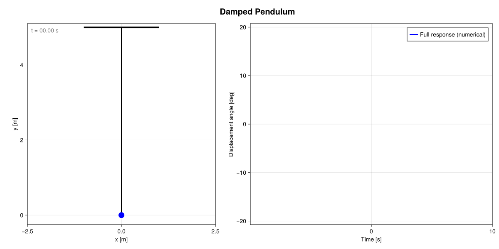
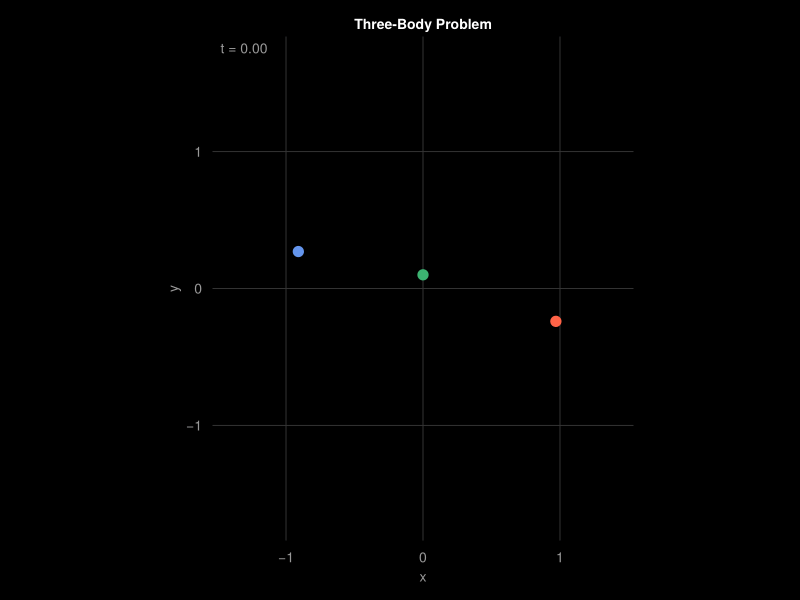
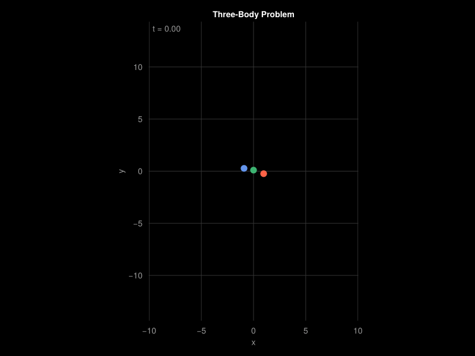

Example Gallery
This page contains demos of simulations which can be run with Springies.jl. The code used to produce these is available in the runs folder in the repo.
Unforced pendulums
We can launch a pendulum by dropping it from rest:

We can instead launch it with a nonzero initial velocity:

Forced pendulums
We can make a crude simulation of a clock pendulum by forcing the pendulum when it is moving outwards:

If we apply a periodic forcing to the pendulum, it eventually reaches a steady state controlled by that forcing. This steady state can be found through nondimensionalisation:

The Double Gyre
We can use Springies.jl to play with advection in the canonical Double Gyre problem:

What if, instead of a velocity field, we were to think of the Double Gyre as a wind force blowing over a field of grass? Let's model the grass blades as flexible beams; we'll decouple the x and y components and think of two springs, one in the x and the other in the y direction:

The Three-body problem
Here is an example of the three-body problem in 2D:

If we run the simulation for longer, we can see the formation of a bound pair and the ejection of the third body:
